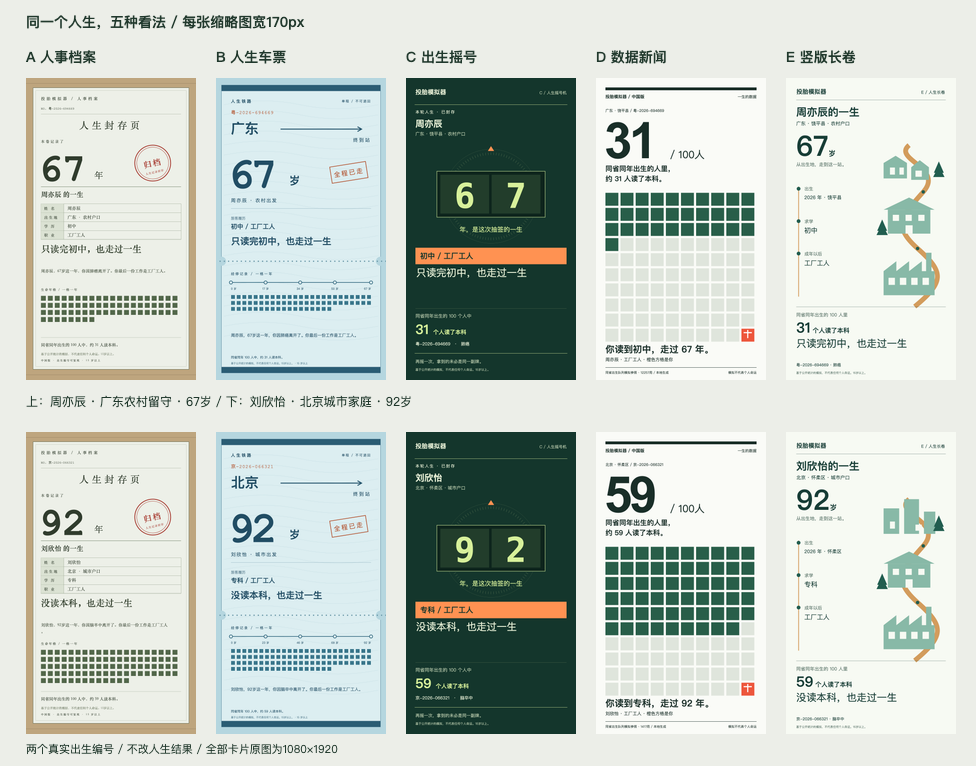

人生的
五种看法。
一份档案，一张车票，一次摇号，
一篇数据报道，一幅往下展开的人生。
每个方向都有出生、15岁中考裁决与终局三屏。
可切换 375 手机版和 1280 桌面版。
同一组人生结果，只切换视觉语言。
170px，留得住什么？
上排为周亦辰，下排为刘欣怡。每张卡片固定为170px宽，模拟信息流的双列缩略图。点击查看原尺寸。

真实人生，不改结果。
京-2026-066321 / 粤-2026-694669
两个样本在15岁都进入普通高中；最终分别读到专科与初中。
终局卡原图均为1080×1920，数字来自同一次本地引擎运行。
字体在本机，数据在本地。
仅使用系统字体，无Google Fonts、无境外CDN。
4个浅色方向，1个深色方向。
本页为静态设计实验，正式界面在选择方向后制作。